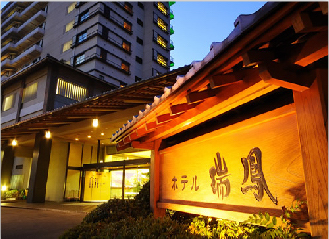
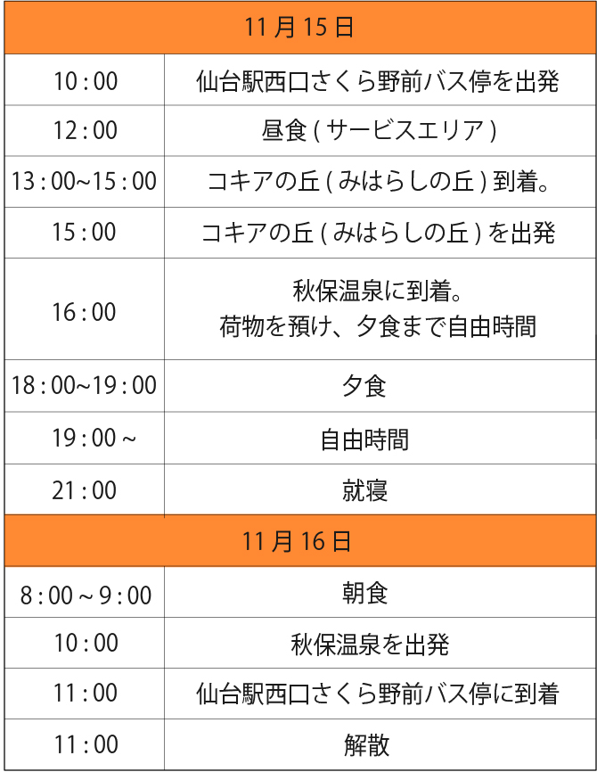

秋を堪能
コキアの丘ツアー

読書の秋！食欲の秋！そして紅葉の秋！太陽に照らされた色鮮やかな緑から赤や黄色に移り変わりゆく景色は、その時にしか見られない自然の造り出す芸術です。紅葉といえば、もみじやイチョウが有名。でも、今年の秋はちょっと変わった赤いもこもこ「コキア」を、お一人様10780円のツアーに参加して楽しんでみませんか？
「コキア」とは？ ・・・・・・・・・・
ユーラシア大陸の乾燥地が原産の「コキア」は、”ホウキグサ”や”ホウキギ”とも呼ばれます。それは昔、コキアの茎を乾燥させてほうきを作っていたから。一面に広がるもこもこのコキアは、ちょっとかわいいですよね。
ちなみにコキアは実がなるのですが、実は「とんぶり」と言い、プチプチとした食感が似ていることから、”畑のキャビア”や”山のカズノコ”として親しまれ食べられているんですよ！
ちなみにコキアは実がなるのですが、実は「とんぶり」と言い、プチプチとした食感が似ていることから、”畑のキャビア”や”山のカズノコ”として親しまれ食べられているんですよ！


コキアの丘を堪能したあとは？ ・・・・
コキアの丘を堪能したあとはホテル瑞鳳に一泊して、旅の疲れを癒しましょう。
夕食には秋の味覚を楽しめる料理もご用意しています！

ツアー日程 ・・・・・・・・・・・・・
